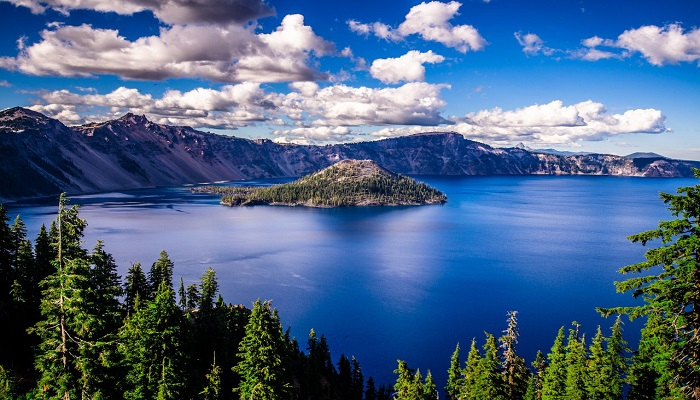

Crater Lake is a crater lake in south-central Oregon in the western United States. It is the main feature of Crater Lake National Park and is famous for its deep blue color and water clarity. The lake partly fills a nearly 655 meters deep caldera that was formed around 7,700 (± 150) years ago by the collapse of the volcano Mount Mazama. There are no rivers flowing into or out of the lake; the evaporation is compensated for by rain and snowfall at a rate such that the total amount of water is replaced every 250 years. With a depth of 594 meters, the lake is the deepest in the United States. In the world, it ranks ninth for maximum depth, and third for mean (average) depth.
Crater Lake features two small islands. Wizard Island, located near the western shore of the lake, is a cinder cone approximately 316 acres in size. Phantom Ship, a natural rock pillar, is located near the southern shore.
Since 2002, one of Oregon's regular-issue license plate designs has featured Crater Lake and a one-time plate surcharge is used to support the operation of Crater Lake National Park. The commemorative Oregon State Quarter, which was released by the United States Mint in 2005, features an image of Crater Lake on its reverse.
The lake and surrounding park areas offer many recreational activities including hiking, biking, snowshoeing, fishing, and cross-country skiing are available, and during the summer, campgrounds and lodges at Crater Lake are open to visitors.
